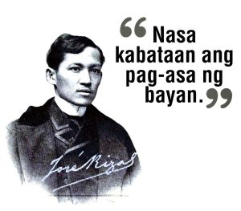

Alamin ang buhay, kasaysayan, at mga akda ni Rizal
Ang website na ito ay naglalayong ipakita ang mahalagang papel ng kabataan sa nasyonalismo,
gamit ang mga aral mula sa buhay at akda ni José Rizal. Layunin din nitong kilalanin ang kanyang
mga kontribusyon, ipakita ang kaugnayan ng kanyang aral sa mga isyung kinakaharap ng
kabataan ngayon, at hikayatin ang aktibong pakikilahok para sa pagbabago at pag-unlad ng bayan.
Naglalaman ang website ng mga seksyon tulad ng "Buhay at Akda ni Rizal", na tumatalakay sa
kanyang talambuhay at mga obra; "Mga Hamon ng Kabataan", na nag-uugnay ng mga aral ni Rizal
sa modernong isyu; "Infographics", na biswal na nagpapaliwanag ng mahahalagang ideya; at
"Interactive Quiz", na sumusubok sa kaalaman tungkol kay Rizal at nasyonalismo. Ang lahat ng
ito ay naglalayong magbigay-inspirasyon at magpalaganap ng makabayang kamalayan sa kabataan.
